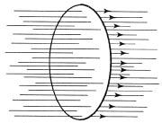

Alan yasalarının nicel, matematiksel tanımı, Maxwell denklemleri denen denklemlerde özetlenir. Şimdiye dek anılan olgular, bu denklemlerin formülleştirilmesine varmıştır. Ama bu denklemlerin içeriği, gösterebildiğimizden çok daha zengindir. Bu denklemlerin basit biçimlerinin altında, ancak dikkatli bir inceleme ile ortaya çıkan bir enginlik gizlidir.
Bu denklemlerin formülleştirilmesi, yalnız içeriklerinin zenginliğinden ötürü değil, yeni tipte bir yasa örneği olmalarından ötürü de fizikte Newton’dan beri elde edilmiş en önemli sonuçtur.
Maxwell denklemlerinin ayırıcı özellikleri, çağdaş fiziğin öbür denklemlerinin hepsinde görünür ve bir tümcede özetlenir. Maxwell denklemleri, alanın yapısını aydınlatan yasalardır.
Maxwell denklemleri, biçim ve karakter bakımından, klasik mekaniğin denklemlerinden niçin farklıdır? Bu denklemler alanın yapısını tanımlar demenin anlamı nedir? Nasıl oluyor da, Oersted ve Faraday deneylerinin sonuçlarına dayanarak, fiziğin sonraki gelişimi için pek önemli olan yeni tipte bir yasa koyabiliyoruz?
Daha önce, Oersted deneyinde, değişen bir elektriksel alanın çevresinde magnetik bir alanın nasıl düzenlendiğini görmüştük. Değişen bir magnetik alanın çevresinde bir elektrik akımının nasıl kangallandığını ise Faraday deneyinden biliyoruz. Maxwell teorisinin ayırıcı özelliklerini kaba taslak sunmak için, şimdilik, bütün dikkatimizi deneylerden yalnız biri üzerinde, söz gelimi Faraday’ınkinde toplayalım. Değişen bir magnetik alanın indüklediği elektrik akımını gösteren şekli [şekil-51] yeniden çizelim. [Şekil-52]

[Şekil-52]
Telin çevrelediği yüzeyi delip geçen kuvvet çizgilerinin sayısı değişirse ya da devrenin biçimi bozulursa, ya da devre hareket ettirilirse, bir akım ortaya çıkar. Önemli olan, yüzeyi delip geçen kuvvet çizgileri sayısının değişmesidir. Değişme nasıl olursa olsun, bunun önemi yoktur. Bu çeşitli değişme olanaklarının hepsini hesaba katmak, onların özel etkilerini tartışmak, zorunlu olarak çok karmaşık bir teoriye yol açardı. Peki ama, problemimizi basitleştiremez miyiz? Devrenin biçimi, uzunluğu ve telin çevrelediği yüzeyle ilgili her şeyi, düşünme alanımızdan çıkarmayı deneyelim. Son şeklimizdeki devrenin gittikçe küçüldüğünü, yavaş yavaş uzayda belirli bir noktayı kuşatan çok küçük bir devre durumuna geldiğini düşünelim. O zaman, biçim ve büyüklükle ilgili her şey, tümüyle konu dışıdır. Kapalı eğrinin, sonunda bir nokta durumuna geldiği bu küçültme işleminde, biçim ve büyüklük kendiliğinden düşünme alanımızın dışında kalır ve biz, istenen bir anda ve uzaydaki istenen herhangi bir noktada, magnetik alan ile elektriksel alanın değişmeleri arasındaki bağlantıları belirleyen yasaları bulabiliriz.
Bu, Maxwell denklemlerine çıkan en önemli basamaklardan biridir. Burada da, Faraday deneyi nokta durumuna getirilmiş bir devre ile ve hayal gücünde yinelenerek, düşünselleştirilmiş bir deney yapılmıştır.
Doğrusunu söylemek gerekirse, bu, Maxwell denklemlerine çıkan tam bir basamak olmaktan çok, yarım bir basamaktır. Dikkatimizi geçici olarak Faraday deneyinde toplamıştık. Ama alan teorisinin öbür dayanağı da –ki tabanı Oersted deneyidir– aynı dikkatle ve aynı biçimde incelenmelidir. Bu deneyde, magnetik kuvvet çizgileri akımın çevresinde kangallanmaktadır. Çember biçimindeki kuvvet çizgilerini bir nokta durumuna gelinceye dek küçültürsek, ikinci yarım basamağı çıkmış oluruz ve istenen anda ve uzaydaki istenen bir noktada magnetik alan ile elektriksel alanın değişmeleri arasındaki bağlantıları buluruz.
Ama çok önemli bir basamak daha çıkılmalıdır. Faraday deneyine göre, elektriksel alanın varlığını sınayan bir tel olmalıdır, Oersted deneyinde magnetik alanın varlığını sınayan magnetik bir kutup ya da iğne bulunması gibi. Ama Maxwell’in teorik düşüncesi, bu deneysel olguları aşar. Elektriksel alan ile magnetik alan, ya da kısaca söylemek gerekirse, elektromagnetik alan, Maxwell’in teorisinde, gerçek bir şeydir. Elektriksel alanı yaratan, değişen bir magnetik alandır ve elektriksel alan, varlığını sınamak için bir tel bulup bulunmamasına hiç bağlı değildir. Magnetik bir alanı yaratan ise, onun varlığını sınayacak magnetik bir kutup olsa da olmasa da, değişen bir elektriksel alandır.
Demek ki Maxwell denklemlerine çıkan başlıca iki basamak vardır. Birincisi: Oersted ve Rowland deneyleri ele alınırken, akımın ve değişen elektriksel alanın çevresinde kangallanan magnetik alanın çember biçimindeki kuvvet çizgisi küçültülerek nokta durumuna getirilmelidir; Faraday deneyi üzerinde durulurken, değişen magnetik alanın çevresinde kangallanan elektriksel alanın çember biçimindeki kuvvet çizgisi küçültülüp nokta durumuna getirilmelidir. İkinci basamak, alanın gerçek bir şey olarak tanınmasıdır; ve bir kez yaratılan elektromagnetik alanın varlığı, etkisi, değişmesi, Maxwell yasalarına göre olur.
Maxwell denklemleri, elektromagnetik alanın yapısını tanımlar. Bu yasalar, mekanik yasaları gibi yalnız madde ya da elektrik yükleri bulunan noktalarda değil, bütün uzayda geçerlidir.
Mekanikteki durumu bir daha analım: Bir taneciğin konumunu ve hızını yalnız bir an için bilirsek –etkili kuvvetleri bilirsek, taneciğin izleyeceği bütün yolu önceden kestirebiliyorduk. Maxwell teorisinde ise, alanı yalnız bir an için bilirsek, bütün alanın uzayda ve zamanda nasıl değişeceğini teorinin denklemlerinden çıkarabiliriz. Mekanik denklemler maddesel taneciklerin geçmişini izleyebilmemizi sağladığı gibi, Maxwell denklemleri de alanın geçmişini izleyebilmemizi sağlar.
Ama mekanik yasaları ile Maxwell yasaları arasında gene de köklü bir fark vardır. Newton’un gravitation yasaları ile Maxwell’in alan yasalarını karşılaştırmak, bu denklemlerin ayırıcı özelliklerinden bazılarını belirtecektir.
Newton yasalarının yardımı ile, Güneş ve Yer arasında etkisini gösteren kuvvetten Yer’in hareketini çıkarabiliriz. Bu yasalar, Yer’in hareketi ile çok uzakta olan Güneş’in etkisi arasındaki bağı bildirir. Güneş ve Yer, birbirlerinden çok uzakta bulunmakla birlikte, ikisi de bu kuvvet oyununun oyuncularıdır.
Maxwell teorisinde maddesel oyuncular yoktur. Bu teorinin matematiksel denklemleri, elektromagnetik alanda geçerli olan yasaları anlatır. Bunlar, Newton yasalarında olduğu gibi, uzayda birbirinden uzakta yer alan iki olay arasında bağlantı kurmaz; burada olanlarla oradaki, koşullar arasında bağlantı kurmaz. Burada ve şimdi varolan alan, hemen yakınında ve hemen biraz önceki anda varolmuş alana bağlıdır. Burada ve şimdi ne olduğunu bilirsek, denklemlere dayanarak, uzayda biraz ötede ve zamanda biraz sonra ne olacağını önceden söyleyebiliriz. Onlara dayanarak, alan üzerine bildiklerimizi küçük aşamalardan geçerek artırabiliriz. Bu çok küçük aşamaları birbirine ekleyerek, uzak bir yerde olmuş şeyden, burada olmakta olanı çıkarabiliriz. Newton teorisinde, bunun tam tersine, yalnız birbirinden uzak olaylar arasındaki bağlantıyı ortaya çıkaran büyük aşamalara yer vardır. Oersted ve Faraday deneylerine, Maxwell teorisinden, ama ancak Maxwell denklemlerinin kullanılabildiği küçük aşamaları birbirine ekleyerek, yeniden varılabilir.
Maxwell denklemlerinin matematiksel yoldan ve daha geniş ölçüde incelenmesi, bu denklemlerden yeni ve gerçekten beklenmedik sonuçlar çıkarılabildiğini ve teorik sonuçlar artık nicel karakterde oldukları için ve eksiksiz bir mantıklı kanıt zincirinin sonunda bulundukları için bütün teorinin çok daha yüksek bir düzeyde sınandığını gösterir.
Gene düşünselleştirilmiş bir deney tasarlayalım. Bir dış etki, elektrik yüklü bir küreyi çabuk ve bir sarkaç gibi ritimli olarak salınmaya zorluyor. Alanın değişmesi konusunda şimdiden edindiğimiz bilgiye dayanarak, bu sırada olanları alan dili ile nasıl anlatacağız?
Yükün salınımı, değişen bir elektriksel alan yaratır. Bu elektriksel alana ise hep değişen bir magnetik alan eşlik eder. Salınan yükün yakınına kapalı bir devre oluşturan bir tel konursa, değişen magnetik alan da devrede bir elektrik akımı yaratacaktır. Bütün bunlar, bilinen olguların yalnızca bir yinelemesidir, ama Maxwell denklemlerinin incelenmesi, salınan elektrik yükü problemini çok daha derinlemesine kavramamızı sağlar. Salınan bir elektrik yükünü kuşatan alanın karakterini, kaynağın yakınındaki ve uzağındaki yapısını ve zamanla değişmesini, Maxwell denklemlerinden, matematiğe başvurarak çıkarabiliriz. Sonuç, elektromagnetik dalgadır. Uzayda belirli bir hızla yol alarak salınan elektrik yükünden enerji yayılır; oysa enerjinin iletimi, bir durumun yer değiştirmesi, bütün dalga olaylarının ayırıcı özelliğidir.
Farklı dalga tiplerini daha önce söz konusu etmiştik. Yürek gibi atan kürenin doğurduğu boyuna dalga vardı. Burada, ortamda yayılan yoğunluk değişmeleri söz konusuydu. Peltemsi bir ortamda yayılan enine dalgalar vardı. Peltemsi ortamda, kürenin dönmesinden doğan bir biçim bozulması (deformation), ortam boyunca yayılıyordu. Bir elektromagnetik dalgada yayılan değişmeler hangi çeşittendir? Bunlar, yalnızca bir elektromagnetik alanın değişmeleridir! Elektriksel alanın her değişmesi, magnetik bir alan yaratır; bu magnetik alanın her değişmesi de bir elektriksel alan yaratır, vb.. Alan enerjinin varlığını gösterdiği için, belirli bir hızla uzayda yayılan bütün bu değişmeler, bir dalga yaratır. Elektriksel ve magnetik kuvvet çizgileri teoriden çıkardığımız sonuca göre hep yayılma yönüne dik düzlemler üzerinde bulunur. Bundan dolayı, ortaya çıkan dalga, eninedir. Oersted ve Faraday deneylerine dayanarak çizdiğimiz alan resminin temel özellikleri değişmeden kalmaktadır, ama artık o resmin daha derin bir anlamı olduğunu biliyoruz.
Elektromagnetik dalga, boş uzayda yayılır. Teorinin sonuçlarından biri de budur. Salınan elektrik yükü birdenbire durursa, yükün alanı durgun elektriksel alan durumuna gelir. Ama salınınım yarattığı sıra dalgalar yayılagider. Dalgalar artık bağımsız bir varlık gösterir ve onların değişmeleri, tıpkı herhangi bir maddesel noktanınki gibi, izlenebilir.
Bizim tasarladığımız, uzayda belirli bir hızla yayılan ve zamanla değişen bu elektromagnetik dalganın yalnız Maxwell denklemlerinin sonucu olduğunu anlıyoruz; çünkü uzaydaki herhangi bir noktada ve herhangi bir an için elektromagnetik alanın yapısını bu denklemler tanımlar. Çok önemli başka bir soru daha var: Elektromagnetik dalga, boş uzayda hangi hızla yayılır? Teori, dalganın gerçek yayılması ile hiç ilgisi olmayan basit deneylerin sağladığı verilere dayanarak, bu soruya açık bir yanıt vermektedir: Bir elektromagnetik dalganın hızı ışık hızına eşittir.
Oersted ve Faraday deneyleri Maxwell yasalarının dayandığı temelleri oluşturur. Şimdiye dek bu yasaların incelenmesinden çıkardığımız bütün sonuçlar, alan dili ile anlatılmıştır. Işık çabukluğu ile yayılan elektromagnetik dalganın teorik olarak bulunması, bilim tarihindeki en büyük başarılardan biridir.
Deney, teorinin öngördüğünü doğrulamıştır. Elektromagnetik dalgaların varlığını, bundan elli yıl önce ve ilk kez Hertz gösterdi ve hızlarının ışığınkine eşit olduğunu deneyle saptadı. Bugün, elektromagnetik dalgaların gönderilmesi ve alınması, milyonlarca insanın günlük işlerindendir. Onların aygıtları, Hertz’in kullandığından çok daha karmaşıktır ve dalgaların varlığını kaynaklarından ancak birkaç metre uzaktan değil, binlerce kilometre uzaktan saptamaktadır.